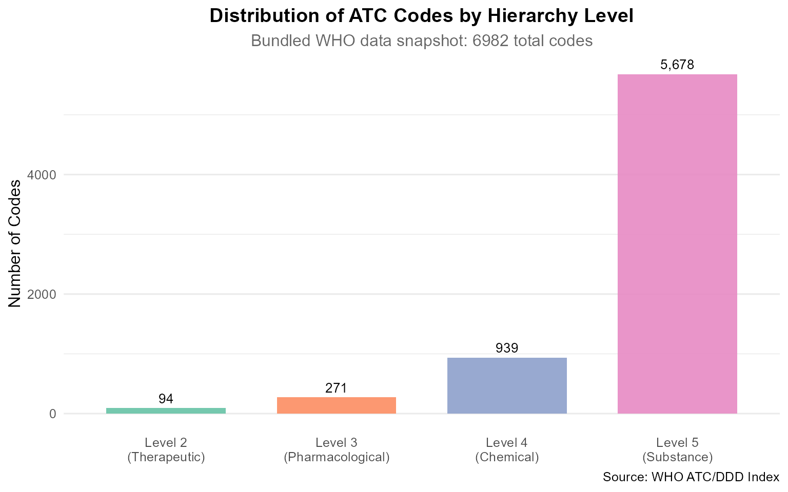

Introduction
The atcddd package provides comprehensive tools for
working with the World Health Organization’s Anatomical
Therapeutic Chemical (ATC) Classification System and
Defined Daily Dose (DDD) values. Whether you need to
crawl the latest WHO data, validate ATC codes, navigate the five-level
drug hierarchy, or compute DDD metrics from prescription records —
atcddd gives you tidy, reproducible workflows in R.
What is the ATC Classification System?
The ATC system divides drugs into five levels of increasing specificity:
| Level | Name | Example code | Example name |
|---|---|---|---|
| 1 | Anatomical main group | N |
Nervous system |
| 2 | Therapeutic subgroup | N02 |
Analgesics |
| 3 | Pharmacological subgroup | N02B |
Other analgesics and antipyretics |
| 4 | Chemical subgroup | N02BE |
Anilides |
| 5 | Chemical substance | N02BE01 |
paracetamol |
What is the Defined Daily Dose (DDD)?
The DDD is the assumed average maintenance dose per day for a drug used for its main indication in adults. It is a unit of measurement, not a recommended dose. DDDs enable researchers to compare drug utilisation across populations, regions, and time periods — even when drugs come in different strengths and package sizes.
Quick Start
The 14 Main Anatomical Groups
The ATC system starts with 14 single-letter groups. Use
atc_roots_default() to list them:
roots <- atc_roots_default()
roots
#> [1] "A" "B" "C" "D" "G" "H" "J" "L" "M" "N" "P" "R" "S" "V"Validate Any ATC Code
is_valid_atc_code() checks whether a string conforms to
the official ATC format:
# Valid codes at each level
is_valid_atc_code("N") # Level 1 — TRUE
#> [1] TRUE
is_valid_atc_code("N02") # Level 2 — TRUE
#> [1] TRUE
is_valid_atc_code("N02BE01") # Level 5 — TRUE
#> [1] TRUE
# Invalid codes
is_valid_atc_code("n02be01") # lowercase — FALSE
#> [1] FALSE
is_valid_atc_code("N02-BE01") # hyphens — FALSE
#> [1] FALSE
is_valid_atc_code("N02BE011") # too long — FALSE
#> [1] FALSE
is_valid_atc_code("ZZZ") # bad pattern — FALSE
#> [1] FALSERetrieving ATC Data
High-Level API (Recommended)
The get_atc_data() function provides a clean interface
to the WHO database:
# Get full data for aspirin
aspirin <- get_atc_data("N02BA01")
aspirin
# Get all analgesics with their sub-classifications
analgesics <- get_atc_data("N02", include_children = TRUE)
head(analgesics, 10)
# Get multiple groups at once
cns_cv <- get_atc_data(c("N", "C"))
cns_cvLow-Level Crawling (Advanced)
For more control, use atc_crawl() directly:
# Crawl dermatological drugs (ATC group D)
res <- atc_crawl(
roots = "D",
rate = 0.5,
progress = TRUE,
max_codes = 100
)
# The result is a list with two tibbles
str(res, max.level = 1)
# Codes table: atc_code + atc_name
head(res$codes, 10)
# DDD table: source_code, atc_code, atc_name, ddd, uom, adm_r, note
head(res$ddd, 5)Working with the Hierarchy
The get_atc_hierarchy() function returns the full
parent-child tree:
# Get complete hierarchy under analgesics (N02)
tree <- get_atc_hierarchy("N02")
tree %>%
select(atc_code, atc_name, level, parent_code, has_children) %>%
head(10)Column descriptions:
-
parent_code— the code one level up in the hierarchy (NA for Level 1) -
has_children— TRUE if this node has sub-classifications below it -
level— hierarchy depth (1-5)
Understanding DDD Data Quality
Not all drugs have DDD values — and this is expected. The WHO does not assign DDDs to several categories of medicines. Understanding why prevents false conclusions when NA values appear in your data.
# Systemic antibiotics — most WILL have DDD values
abx <- atc_crawl(roots = "J01AA", rate = 0.5, max_codes = 30)
cat("Systemic antibiotics with DDD:",
sum(!is.na(abx$ddd$ddd)), "/", nrow(abx$ddd))
# Topical dermatologicals — most WON'T have DDD values
derm <- atc_crawl(roots = "D01", rate = 0.5, max_codes = 50)
cat("Topical dermatologicals with DDD:",
sum(!is.na(derm$ddd$ddd)), "/", nrow(derm$ddd))Why NA Values Are Correct
| Drug Category | Reason for Missing DDD |
|---|---|
| Topicals / dermatologicals | Variable absorption; dosing depends on body surface area |
| Fixed-dose combinations | WHO policy: no DDD for combinations |
| Ophthalmics, otics, nasal preps | Local application with minimal systemic absorption |
| Older / rarely used drugs | Not prioritized for DDD assignment |
Exporting Results
Save to CSV
res <- atc_crawl(roots = "D", max_codes = 50)
paths <- atc_write_csv(res, dir = "output", stamp = TRUE)
# Creates:
# output/WHO_ATC_codes_2025-07-14.csv
# output/WHO_ATC_DDD_2025-07-14.csvGenerate Reproducibility Manifests
# Each manifest includes SHA256 checksums for every file
atc_write_manifest(paths)
# Creates: output/MANIFEST.csvUse manifests to document exactly which version of WHO data your analysis used — critical for reproducible pharmacoepidemiology.
Offline Data Access
The package bundles WHO ATC/DDD snapshot data that can be loaded without an internet connection:
# Paths to bundled CSV data
codes_path <- system.file("extdata", "WHO_ATC_codes_2026-07-14.csv",
package = "atcddd")
ddd_path <- system.file("extdata", "WHO_ATC_DDD_2026-07-14.csv",
package = "atcddd")
# Load into R
atc_codes <- readr::read_csv(codes_path, show_col_types = FALSE)
atc_ddd <- readr::read_csv(ddd_path, show_col_types = FALSE)
# Quick look
cat(sprintf("ATC codes table: %d rows\n", nrow(atc_codes)))
#> ATC codes table: 6982 rows
cat(sprintf("ATC DDD table: %d rows\n", nrow(atc_ddd)))
#> ATC DDD table: 6218 rows
head(atc_codes, 5)
#> # A tibble: 5 × 2
#> atc_code atc_name
#> <chr> <chr>
#> 1 A01 STOMATOLOGICAL PREPARATIONS
#> 2 A01A STOMATOLOGICAL PREPARATIONS
#> 3 A01AA Caries prophylactic agents
#> 4 A01AA01 sodium fluoride
#> 5 A01AA02 sodium monofluorophosphateSearch Drug Names Offline
# Find all codes containing "paracetamol"
atc_codes %>%
filter(grepl("paracetamol", atc_name, ignore.case = TRUE))
#> # A tibble: 8 × 2
#> atc_code atc_name
#> <chr> <chr>
#> 1 N02AJ01 dihydrocodeine and paracetamol
#> 2 N02AJ06 codeine and paracetamol
#> 3 N02AJ13 tramadol and paracetamol
#> 4 N02AJ17 oxycodone and paracetamol
#> 5 N02AJ22 hydrocodone and paracetamol
#> 6 N02BE01 paracetamol
#> 7 N02BE51 paracetamol, combinations excl. psycholeptics
#> 8 N02BE71 paracetamol, combinations with psycholeptics
# Find all Level 2 therapeutic subgroups
atc_codes %>%
filter(nchar(atc_code) == 3) %>%
head(10)
#> # A tibble: 10 × 2
#> atc_code atc_name
#> <chr> <chr>
#> 1 A01 STOMATOLOGICAL PREPARATIONS
#> 2 A02 DRUGS FOR ACID RELATED DISORDERS
#> 3 A03 DRUGS FOR FUNCTIONAL GASTROINTESTINAL DISORDERS
#> 4 A04 ANTIEMETICS AND ANTINAUSEANTS
#> 5 A05 BILE AND LIVER THERAPY
#> 6 A06 DRUGS FOR CONSTIPATION
#> 7 A07 ANTIDIARRHEALS, INTESTINAL ANTIINFLAMMATORY/ANTIINFECTIVE AGENTS
#> 8 A08 ANTIOBESITY PREPARATIONS, EXCL. DIET PRODUCTS
#> 9 A09 DIGESTIVES, INCL. ENZYMES
#> 10 A10 DRUGS USED IN DIABETESAnalysis Example: DDD Availability by Route
# Analyse DDD patterns across administration routes
atc_ddd %>%
filter(!is.na(adm_r) & adm_r != "NA" & adm_r != "") %>%
count(adm_r, sort = TRUE) %>%
mutate(pct = round(100 * n / sum(n), 1)) %>%
head(10)
#> # A tibble: 10 × 3
#> adm_r n pct
#> <chr> <int> <dbl>
#> 1 O 1670 60.5
#> 2 P 817 29.6
#> 3 R 79 2.9
#> 4 N 38 1.4
#> 5 V 37 1.3
#> 6 Inhal.solution 25 0.9
#> 7 Inhal.aerosol 23 0.8
#> 8 Inhal.powder 23 0.8
#> 9 SL 16 0.6
#> 10 TD 14 0.5Analysis Example: Hierarchy Distribution
# Classify codes by level
atc_codes %>%
mutate(
code_len = nchar(atc_code),
level = case_when(
code_len == 1 ~ "Level 1\n(Anatomical)",
code_len == 3 ~ "Level 2\n(Therapeutic)",
code_len == 4 ~ "Level 3\n(Pharmacological)",
code_len == 5 ~ "Level 4\n(Chemical)",
code_len == 7 ~ "Level 5\n(Substance)",
TRUE ~ "Other"
)
) %>%
filter(level != "Other") %>%
count(level) %>%
mutate(level = factor(level, levels = c(
"Level 1\n(Anatomical)", "Level 2\n(Therapeutic)",
"Level 3\n(Pharmacological)", "Level 4\n(Chemical)",
"Level 5\n(Substance)"
))) %>%
ggplot(aes(x = level, y = n, fill = level)) +
geom_col(width = 0.7, alpha = 0.9) +
geom_text(aes(label = scales::comma(n)), vjust = -0.5, size = 3.5) +
scale_fill_brewer(palette = "Set2") +
labs(
title = "Distribution of ATC Codes by Hierarchy Level",
subtitle = paste("Bundled WHO data snapshot:", nrow(atc_codes), "total codes"),
x = NULL,
y = "Number of Codes",
caption = "Source: WHO ATC/DDD Index"
) +
theme_minimal(base_size = 12) +
theme(
legend.position = "none",
plot.title = element_text(face = "bold", hjust = 0.5),
plot.subtitle = element_text(hjust = 0.5, color = "grey40"),
panel.grid.major.x = element_blank()
)
This pyramid shape is characteristic — one Level 1 root produces many Level 5 substances, reflecting how drug classes branch into specific chemical entities.
Best Practices
Caching
The package caches HTTP responses automatically via memoise. Repeated requests for the same URL return cached data instantly:
# First run: fetches from WHO (slow)
res1 <- atc_crawl(roots = "D", max_codes = 20)
# Second run: reads from cache (fast)
res2 <- atc_crawl(roots = "D", max_codes = 20)Cache location (platform-dependent):
rappdirs::user_cache_dir("atcddd")
Reproducibility
For any published analysis, generate a checksum manifest so reviewers can verify your data:
res <- atc_crawl(roots = c("C", "N"))
paths <- atc_write_csv(res, dir = "data", stamp = TRUE)
atc_write_manifest(paths)Troubleshooting
| Symptom | Likely Cause | Solution |
|---|---|---|
Many NA in DDD column |
Expected for topicals, combinations, ophthalmics, otics | See Understanding DDD Data Quality above |
| Slow crawling | Server latency or low rate value |
Increase rate to 0.5–1.0; use max_codes
for testing |
| HTTP errors | WHO website down or network issue | Check https://www.whocc.no/atc_ddd_index/ |
| Out of memory | Full crawl too large | Crawl one group at a time with max_codes
|
Next Steps
-
Navigating the ATC Hierarchy:
vignette("atc-hierarchy", package = "atcddd") -
Working with Defined Daily Doses:
vignette("ddd-analysis", package = "atcddd")
Session Information
sessionInfo()
#> R version 4.5.0 (2025-04-11 ucrt)
#> Platform: x86_64-w64-mingw32/x64
#> Running under: Windows 11 x64 (build 26200)
#>
#> Matrix products: default
#> LAPACK version 3.12.1
#>
#> locale:
#> [1] LC_COLLATE=English_United States.utf8
#> [2] LC_CTYPE=English_United States.utf8
#> [3] LC_MONETARY=English_United States.utf8
#> [4] LC_NUMERIC=C
#> [5] LC_TIME=English_United States.utf8
#>
#> time zone: Europe/Zurich
#> tzcode source: internal
#>
#> attached base packages:
#> [1] stats graphics grDevices utils datasets methods base
#>
#> other attached packages:
#> [1] ggplot2_4.0.3 dplyr_1.2.1 atcddd_0.2.0
#>
#> loaded via a namespace (and not attached):
#> [1] sass_0.4.10 utf8_1.2.6 generics_0.1.4 hms_1.1.4
#> [5] digest_0.6.39 magrittr_2.0.5 evaluate_1.0.5 grid_4.5.0
#> [9] RColorBrewer_1.1-3 fastmap_1.2.0 jsonlite_2.0.0 scales_1.4.0
#> [13] textshaping_1.0.5 jquerylib_0.1.4 cli_3.6.5 rlang_1.2.0
#> [17] crayon_1.5.3 bit64_4.8.0 withr_3.0.2 cachem_1.1.0
#> [21] yaml_2.3.12 otel_0.2.0 tools_4.5.0 parallel_4.5.0
#> [25] tzdb_0.5.0 memoise_2.0.1 vctrs_0.7.3 R6_2.6.1
#> [29] lifecycle_1.0.5 fs_2.1.0 htmlwidgets_1.6.4 bit_4.6.0
#> [33] vroom_1.7.1 ragg_1.5.2 pkgconfig_2.0.3 desc_1.4.3
#> [37] pkgdown_2.2.0 pillar_1.11.1 bslib_0.10.0 gtable_0.3.6
#> [41] glue_1.8.1 systemfonts_1.3.2 xfun_0.57 tibble_3.3.1
#> [45] tidyselect_1.2.1 knitr_1.51 dichromat_2.0-0.1 farver_2.1.2
#> [49] htmltools_0.5.9 rmarkdown_2.31 labeling_0.4.3 readr_2.2.0
#> [53] compiler_4.5.0 S7_0.2.2